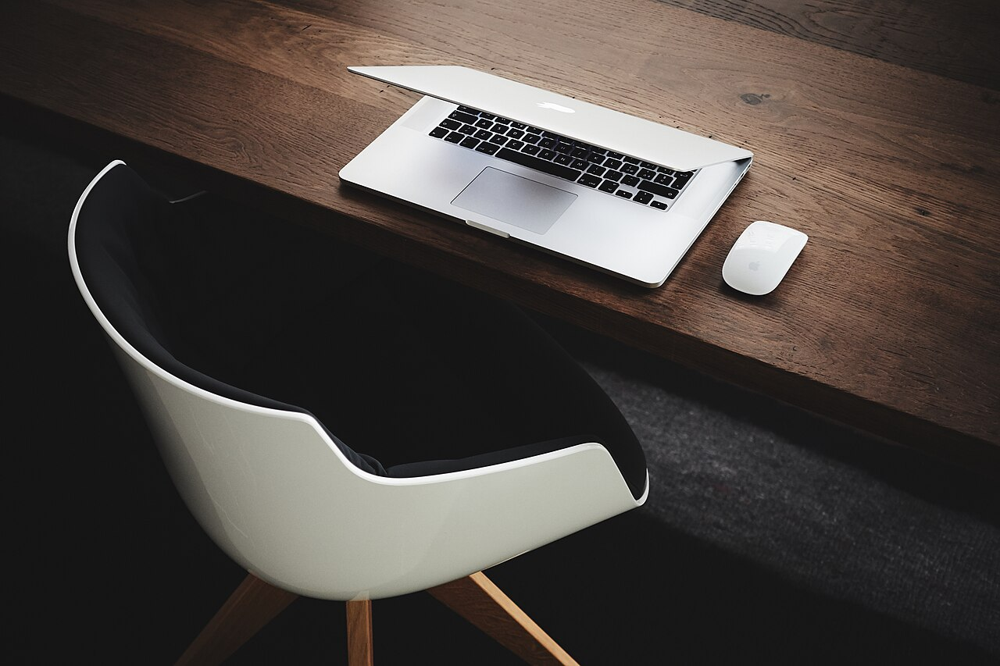
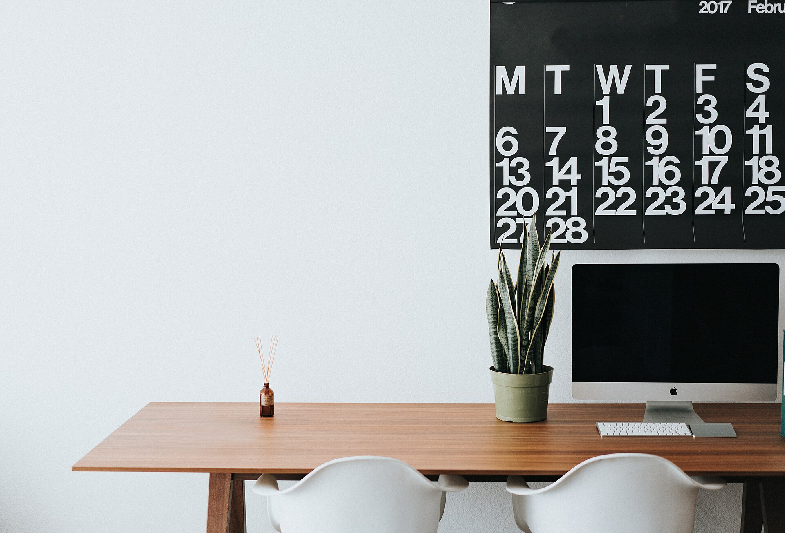
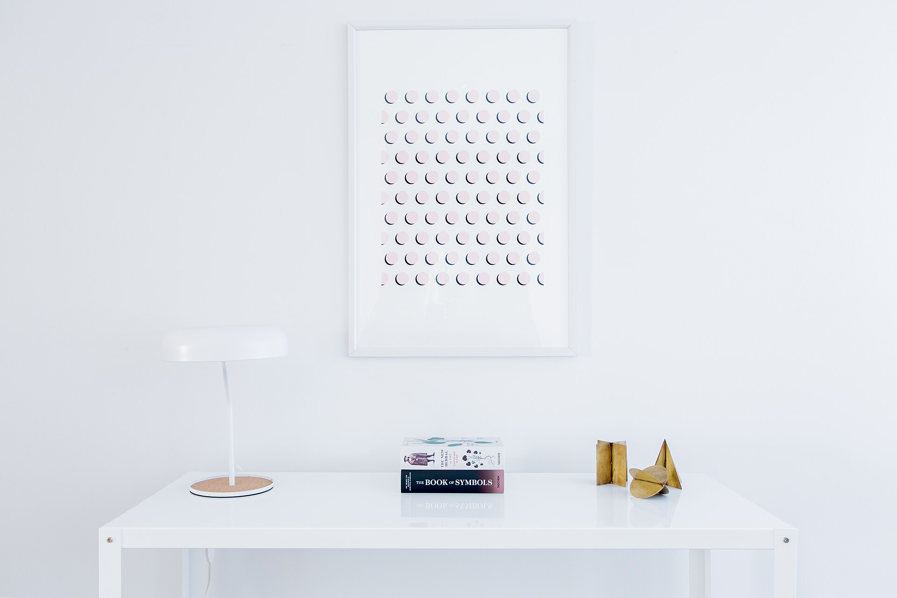

Ergonomic seating
Chairs with adjustable parts, considered alongside your desk and how long you sit.
Explore chairsAbout our approach
We focus on practical furniture choices and considered workspace planning to help people create home offices that suit their space, routines, and priorities.


Our purpose
Choosing furniture for a home office can feel like guesswork. We exist to turn it into a clear set of questions you can answer for your own space.
Our approach
Understand the workspace and the daily routine it has to support.
Consider space limitations and practical requirements before anything is chosen.
Evaluate furniture categories first, then decide what suits the setup.
Furniture placement, screen position, lighting and organisation, worked out together.
What we help people consider
Browse the categories, or talk through your setup in a consultation.

Chairs with adjustable parts, considered alongside your desk and how long you sit.
Explore chairsDesks that change height, plus arms and stands that bring screens to a comfortable position.

Everyday essentials and tidy storage that keep the work surface usable.
Explore accessoriesConsultation
Talk through your room, routine and priorities with us.
Continue exploring
Look through the furniture categories, or start a conversation about your own setup.
